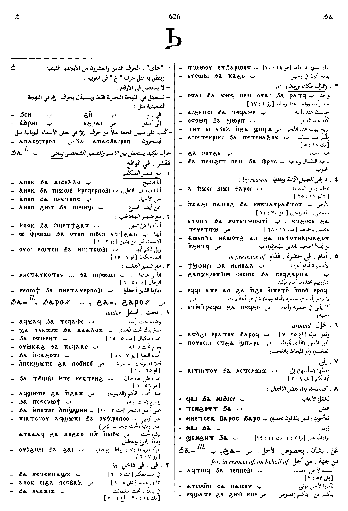
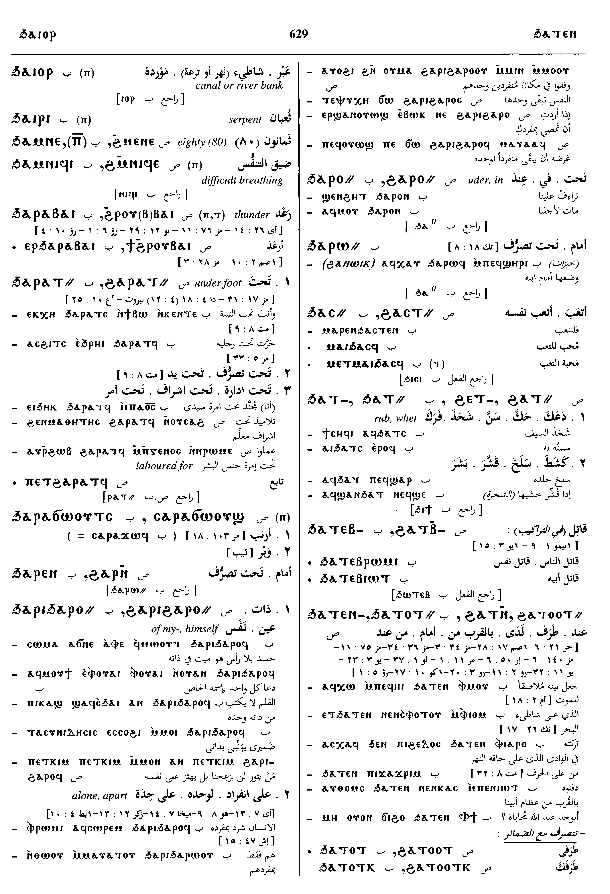

(preposition)
under, in, at [υπο]
dative
from [εκ, απο]
by reason of [υπο, απο]
for, in respect of, on behalf of [υπερ]
for of price [αντι]
against
dative
from [εκ, απο]
by reason of [υπο, απο]
for, in respect of, on behalf of [υπερ]
for of price [αντι]
against
complete
| ⲉⲃⲟⲗ ϩⲁ-, ⲉⲃⲟⲗ ϧⲁ- SB | (mostly doubtful if ⲉⲃⲟⲗ belong to vb or prep), away, from [εκ]3244 | 633b | |||||||
| ⲉϩⲟⲩⲛ ϩⲁ-, ⲉϧⲟⲩⲛ ϧⲁ- SB | in beneath [υπο]3245 | 634a | |||||||
| ⲉϩⲣⲁⲓ ϩⲁ- S | under, up to3246 | ||||||||
| ϩⲁⲣⲓϩⲁⲣⲟ⸗ S
ⳉⲁⲣⲓⳉⲁⲣⲁ⸗ A ϩⲁⲣⲓϩⲁⲣⲁ⸗ L ϧⲁⲣⲓϧⲁⲣⲟ⸗ B |
(pronoun)refl pron, of myself, himself &c, alone, apart [καθ εαυτου, εις εαυτου]3247 | ||||||||
| ϩⲁ- B | scribal error ? for ϧⲁ- [περι, υπερ]3248 | 634b | |||||||
See also:
Homonyms:
| view | ϩⲁ-, ϩⲁⲣⲟ⸗ SB | (preposition) to, toward
― of persons [προς] ― not of persons [προς, εις]2094 |
| view | ⲙⲁⲩⲁⲁ⸗ S ⲙⲁⲩⲁⲧ⸗ SB ⲙⲙⲁⲩⲁⲧ⸗ B ⲙⲁⲩⲉⲉⲧ⸗ F | (adjective) alone, single [μονος, εις]
own as pronoun, self1128 |
| view | ⲙⲙⲓⲛ SALBF ⲙⲙⲓⲛⲉ SBF ⲙⲙⲓⲛⲟⲩ S | (particle) particle + ⲙⲙⲟ⸗, ⲙⲙⲁ⸗ emphasizing a preceding pronoun, mostly possessive, own, proper, self1064 |
| view | ⲣⲱ SLB ⲣⲱⲱ S ⲣⲟⲩ A ⲣⲟ B ⲗⲱ F | (particle) enclitic particle, emphatic or explicative, often untranslatable
― same, again, also esp B ― emphasis or contrast indeed, but ― explicative ― emphasis, even, at all, at last ― in question, then ― after various particles, ⲁⲣⲏⲩ, perhaps, indeed379 |
Homonyms:
| view | ϧⲁ-, ϩⲁ-, ϣⲁ-, ⲭⲉ- B ϩⲁ- S | (particle) particle of apposition before pronoun or art2073 |
| view | ϧⲁ {or ϧⲁⲓ} B | (noun masculine) heel, mark of heel (?)2074 |

Dawoud: 626a - 626b, 626b - 627a, 627a, 627a, 627a, 627a - 627b, 629a - 629b


